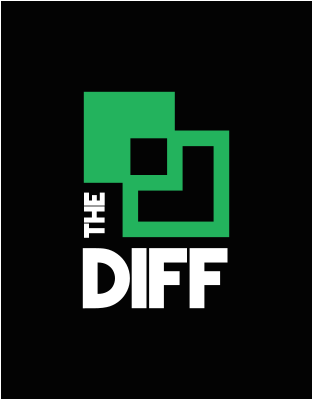
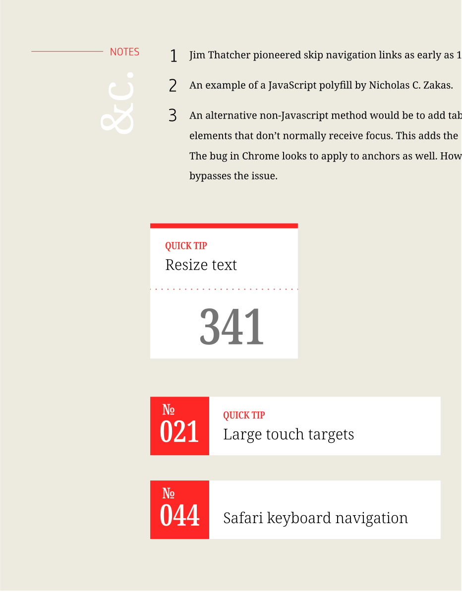
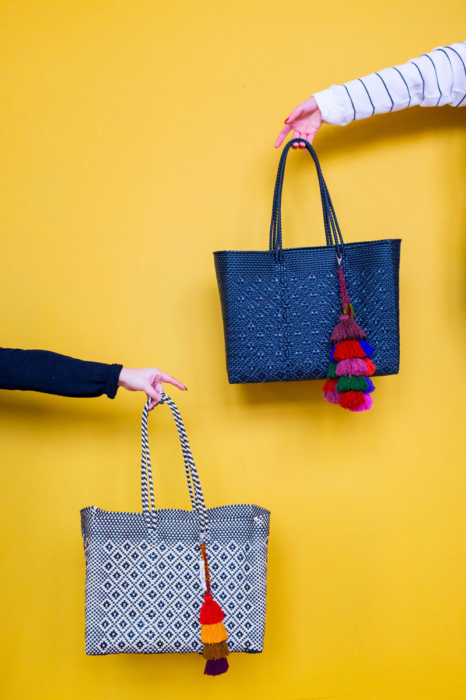
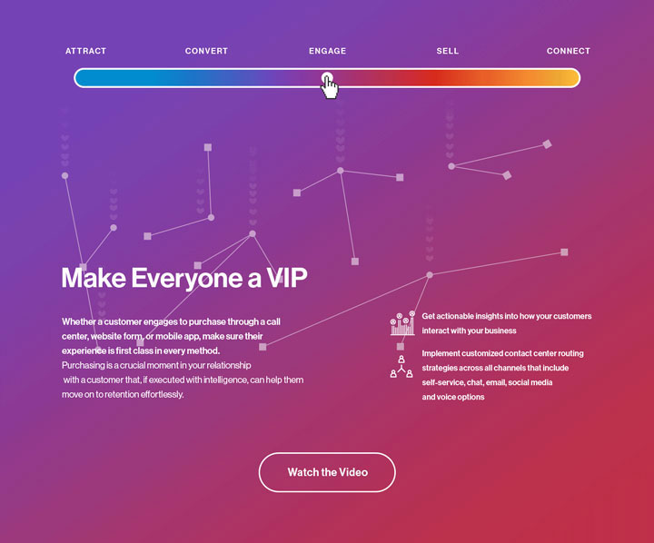
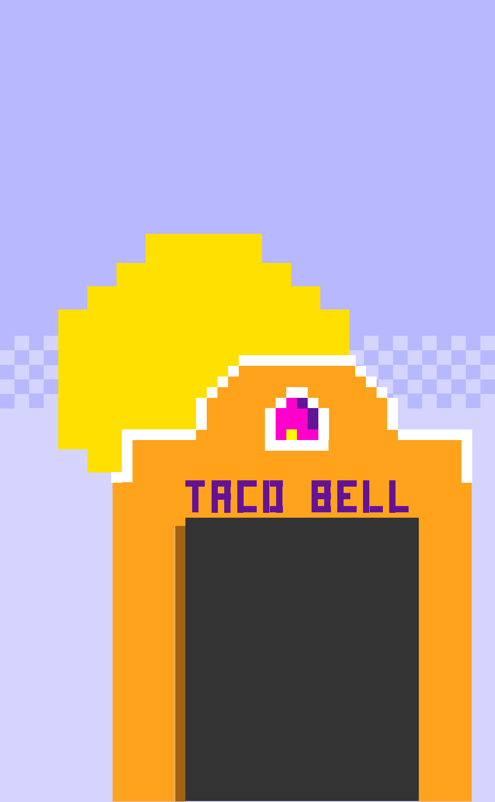
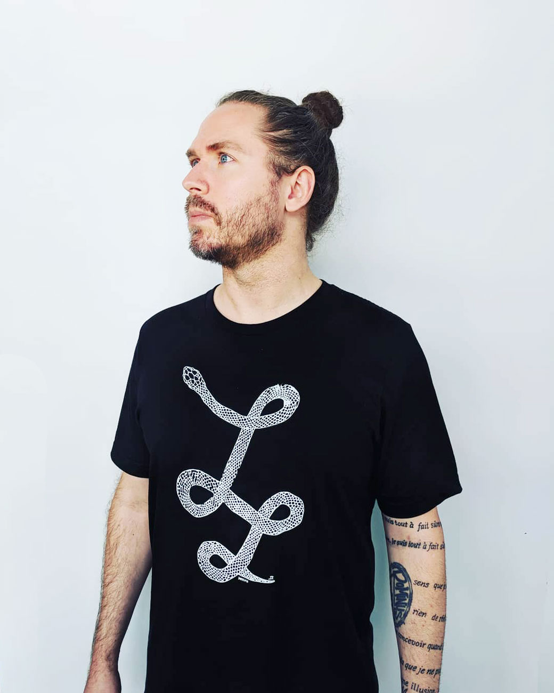

<section id="work" class="container">
          <div class="wrapper">
            <!-- SKILLSHARE -->
            <div class="grid-whole@xs grid-whole@s grid-half@m grid-half@l grid-half@xl padding-thinn">
                <h2 class="t-eyebrow t-thiccfont@xs t-thiccfont@s t-thiccfont@m t-thiccfont@l t-thiccfont@xl">
            Abridged Works
          </h2>
                <p class="t-black t-thiccfont@xs t-thiccfont@s t-chonkfont@m t-chonkfont@l t-chonkfont@xl t-serifweight t-height-tight">Design, art direction, concepting.</p>
            </div>

            <div class="grid-whole@xs grid-half@s grid-quarter@m grid-quarter@l grid-quarter@xl">
                <h3 class="t-eyebrow-line">Stream</h3>
                <p class="t-black t-serifweight t-slimmfont@xs t-slimmfont@s t-slimmfont@m t-slimmfont@l t-slimmfont@xl">The Diff</p>
                <p>In collaboration with <a class="t-link-accent-blue" href="https://henry.codes/">Henry Desroches</a>, a stream about finding, experimenting, and celebrating the many ways to make the web wonderful. Responsible for art direction, content creation, and live teaching.</p>
                <a href="https://thediff.website/" class="t-link-accent-blue t-ltr-stretch t-babyfont" rel="noopener noreferrer">Visit The Diff</a>
            </div>

            <div class="grid-whole@xs grid-half@s grid-quarter@m grid-quarter@l grid-quarter@xl align-self-center">
                
            </div>

            <div class="grid-whole@xs grid-half@s grid-quarter@m grid-quarter@l grid-quarter@xl">
                <h3 class="t-eyebrow-line">Design Systems</h3>
                <p class="t-black t-serifweight t-slimmfont@xs t-slimmfont@s t-slimmfont@m t-slimmfont@l t-slimmfont@xl">A11y Project</p>
                <p>A new, more vibrant design system for the accessibility community resource.</p>
                <p class="t-ltr-stretch t-babyfont">Work in progress</p>
            </div>
            <div class="grid-whole@xs grid-half@s grid-quarter@m grid-quarter@l grid-quarter@xl align-self-center">
                
            </div>
            <div class="grid-whole@xs grid-half@s grid-quarter@m grid-quarter@l grid-quarter@xl">
                <h3 class="t-eyebrow-line">Teaching</h3>
                <p class="t-black t-serifweight t-slimmfont@xs t-slimmfont@s t-slimmfont@m t-slimmfont@l t-slimmfont@xl">Hacking Styleguides for Accessibility</p>
                <p>I wrote the curriculum for, taught, and produced a 42-minute class on Skillshare focused around making the web more accessible.</p>
                <a class="t-link-accent-blue t-ltr-stretch t-babyfont" href="http://goo.gl/EbXVvq"  rel="noopener noreferrer">Take My Class</a>
            </div>
            <div class="grid-whole@xs grid-half@s grid-quarter@m grid-quarter@l grid-quarter@xl align-self-center gradient-dusk ">
                
            </div>
            <!-- SELF-DEFINED -->
            <div class="grid-whole@xs grid-half@s grid-quarter@m grid-quarter@l grid-quarter@xl padding-thinn">
                <h3 class="t-eyebrow-line">Civic Design</h3>
                <p class="t-black t-serifweight t-slimmfont@xs t-slimmfont@s t-slimmfont@m t-slimmfont@l t-slimmfont@xl">Self-Defined</p>
                <p>A dictionary for the people. Born out of tiredness of folks quoting the directionary definition of racism to me and other PoC, I decided to create a resource for the modern world, incorporating the diversity and nuance of people through their own words.</p>
                <a class="t-link-accent-blue t-ltr-stretch t-babyfont" href="http://tatianamac.github.io/selfdefined"  rel="noopener noreferrer">Read the dictionary</a>
            </div>
            <div class="align-self-center grid-whole@xs grid-half@s grid-quarter@m grid-quarter@l grid-quarter@xl padding-thicc@xs padding-thicc@s padding-thicc@m padding-thicc@l padding-thicc@xl">
                
            </div>
            <!-- TEOCALI -->
            <div class="grid-whole@xs grid-whole@s grid-twothirds@m grid-twothirds@l grid-twothirds@xl wrapper wrapper-photogrid">
                <div class="span-row-two@s span-row-two@m span-row-two@l span-row-two@xl grid-whole@xs grid-half@s grid-half@m grid-half@l grid-half@xl align-self-center">
                    <picture>
                        <source sizes="(max-width: 750px) 100vw, 750px"
                        srcset="
                        ../assets/img/teocali-reflection,w_200.webp 200w,
                        ../assets/img/teocali-reflection,w_588.webp 588w,
                        ../assets/img/teocali-reflection,w_750.webp 750w" type="image/webp">
    
                        <source sizes="(max-width: 750px) 100vw, 750px"
                        srcset="
                        ../assets/img/teocali-reflection,w_200.jpg 200w,
                        ../assets/img/teocali-reflection,w_528.jpg 576w,
                        ../assets/img/teocali-reflection,w_750.jpg 750w" type="image/jpeg"> 
                            
                        

                    </picture>
                    
                </div>
                <div class="grid-whole@xs grid-half@s grid-half@m grid-half@l grid-half@xl align-self-center">
                    <picture>
                        <source sizes="(max-width: 905px) 100vw, 905px"
                        srcset="
                        ../assets/img/teocali-laying,w_200.webp 200w,
                        ../assets/img/teocali-laying,w_905.webp 905w" type="image/webp">
    
                        <source sizes="(max-width: 1200px) 100vw, 1200px"
                        srcset="
                        ../assets/img/teocali-laying,w_200.jpg 200w,
                        ../assets/img/teocali-laying,w_735.jpg 735w,
                        ../assets/img/teocali-laying,w_1200.jpg 1200w" type="image/jpeg"> 
                            
                        

                    </picture>
                 
                </div>
                <div class="grid-whole@xs grid-quarter@s grid-quarter@m grid-quarter@l grid-quarter@xl padding-thinn@m padding-thinn@l padding-thinn@xl ">
                    <picture>
                        <source sizes="(max-width: 1067px) 100vw, 864px"
                        srcset="
                        ../assets/img/teocali-flatlay,w_200.webp 200w,
                        ../assets/img/teocali-flatlay,w_419.webp 419w,
                        ../assets/img/teocali-flatlay,w_586.webp 586w,
                        ../assets/img/teocali-flatlay,w_737.webp 737w,
                        ../assets/img/teocali-flatlay,w_864.webp 864w" type="image/webp">
    
                        <source sizes="(max-width: 1067px) 100vw, 888px"
                        srcset="
                        ../assets/img/teocali-flatlay,w_200.jpg 200w,
                        ../assets/img/teocali-flatlay,w_294.jpg 294w,
                        ../assets/img/teocali-flatlay,w_369.jpg 369w,
                        ../assets/img/teocali-flatlay,w_434.jpg 434w,
                        ../assets/img/teocali-flatlay,/img/teocali-flatlay,w_702.jpg 702w,
                        ../assets/img/teocali-flatlay,w_795.jpg 795w,
                        ../assets/img/teocali-flatlay,w_888.jpg 888w" type="image/jpeg"> 
                            
                        
    
                    </picture>
                    
                </div>
                <div class="span-row-two@m span-row-two@l span-row-two@xl grid-whole@xs grid-quarter@s grid-quarter@m grid-quarter@l grid-quarter@xl">
                    <picture>
                        <source sizes="(max-width: 800px) 100vw, 800px"
                        srcset="
                        ../assets/img/teocali-teaser-hands,w_200.webp 200w,
                        ../assets/img/teocali-teaser-hands,w_452.webp 452w,
                        ../assets/img/teocali-teaser-hands,w_641.webp 641w,
                        ../assets/img/teocali-teaser-hands,w_793.webp 793w,
                        ../assets/img/teocali-teaser-hands,w_800.webp 800w" type="image/webp"> 
                        
                        <source sizes="(max-width: 800px) 100vw, 800px"
                        srcset="
                        ../assets/img/teocali-teaser-hands,w_200.jpg 200w,
                        ../assets/img/teocali-teaser-hands,w_303.jpg 303w,
                        ../assets/img/teocali-teaser-hands,w_386.jpg 386w,
                        ../assets/img/teocali-teaser-hands,w_457.jpg 457w,
                        ../assets/img/teocali-teaser-hands,w_523.jpg 523w,
                        ../assets/img/teocali-teaser-hands,w_583.jpg 583w,
                        ../assets/img/teocali-teaser-hands,w_645.jpg 645w,
                        ../assets/img/teocali-teaser-hands,w_696.jpg 696w,
                        ../assets/img/teocali-teaser-hands,w_800.jpg 800w" type="image/jpeg">
                            
                        
        
                    </picture>
                    
                </div>
            </div>
            <div class="grid-whole@xs grid-whole@s grid-third@m grid-third@l grid-third@xl padding-thinn">
                <h3 class="t-eyebrow-line">Photo Art Direction</h3>
                <h4 class="t-serifweight t-slimmfont@xs t-slimmfont@s t-slimmfont@m t-slimmfont@l t-slimmfont@xl ">Teocali Brand</h4>
                <p>Concepted, photographed and art directed seasonal, on-location photoshoots for an accessory- and lifestyle-brand.</p>
            </div>
            <!-- CISCO -->
            <div class="span-row-two grid-whole@xs grid-quarter@s grid-quarter@m grid-quarter@l grid-quarter@xl gradient-fire align-self-center ">          
                <picture>
                    <source sizes="(max-width: 720px) 100vw, 720px"
                    srcset="
                    ../assets/img/ucx-comp,w_200.webp 200w,
                    ../assets/img/ucx-comp,w_720.webp 720w" type="image/webp">

                    <source sizes="(max-width: 720px) 100vw, 720px"
                    srcset="
                    ../assets/img/ucx-comp,w_200.jpg 200w,
                    ../assets/img/ucx-comp,w_425.jpg 425w,
                    ../assets/img/ucx-comp,w_617.jpg 617w,
                    ../assets/img/ucx-comp,w_720.jpg 720w" type="image/jpeg"> 
                        
                    
                    </picture>
            </div>
            <div class="grid-whole@xs grid-half@s grid-quarter@m grid-quarter@l grid-quarter@xl padding-thinn ">
                <h3 class="t-eyebrow-line">Interactive</h3>
                <p class="t-black t-serifweight t-slimmfont@xs t-slimmfont@s t-slimmfont@m t-slimmfont@l t-slimmfont@xl">Cisco Unified Comms</p>
                <p>Website to help articulate the breadth of Cisco products. Designed a conceptual journey to show how products ushered retailers through sales cycle.</p>
                <p class="comingsoon">Case Study In Development</p>
            </div>
            <!-- SALON DOUX-->
            <div class="grid-whole@xs grid-half@s grid-quarter@m grid-quarter@l grid-quarter@xl align-self-center padding-thicc@xs padding-thicc@s padding-thicc@m padding-thicc@l padding-thicc@xl">
            <picture>
                <source sizes="(max-width: 400px) 100vw, 400px"
                srcset="
                ../assets/img/salondoux-comp,w_200.webp 200w,
                ../assets/img/salondoux-comp,w_400.webp 400w" type="image/webp">
                    
                <source sizes="(max-width: 400px) 100vw, 400px"
                srcset="
                ../assets/img/salondoux-comp,w_200.png 200w,
                ../assets/img/salondoux-comp,w_227.png 227w,
                ../assets/img/salondoux-comp,w_247.png 247w,
                ../assets/img/salondoux-comp,w_400.png 400w" type="image/jpeg"> 
                    
                
            </picture>
            </div>
            <div class="grid-whole@xs grid-half@s grid-quarter@m grid-quarter@l grid-quarter@xl padding-thinn ">
                <h3 class="t-eyebrow-line">Interactive</h3>
                <p class="t-black t-serifweight t-slimmfont@xs t-slimmfont@s t-slimmfont@m t-slimmfont@l t-slimmfont@xl">Salon Doux</p>
                <p>Design and development of website for Seattle-based salon.</p>
                <p class="comingsoon">Case Study In Development</p>
                <a class="t-link-accent-blue t-ltr-stretch t-babyfont" href="http://www.salondoux.com/"  rel="noopener noreferrer">Visit the site</a>
            </div>
            <div class="grid-whole@xs grid-half@s grid-quarter@m grid-quarter@l grid-quarter@xl padding-thinn ">
                <h3 class="t-eyebrow-line">Video</h3>
                <p class="t-black t-serifweight t-slimmfont@xs t-slimmfont@s t-slimmfont@m t-slimmfont@l t-slimmfont@xl">Verizon DDoS Attacks</p>
                <p>Working under minimalistic and strict brand guidelines, we conceived a new visual approach to animation for Verizon for a highly conceptual story.</p>
                <a class="t-link-accent-blue t-ltr-stretch t-babyfont" href="https://www.youtube.com/watch?v=z7ltWcN3mqk/"  rel="noopener noreferrer">Watch the Video</a>
            </div>
            <div class="grid-whole@xs grid-half@s grid-quarter@m grid-quarter@l grid-quarter@xl align-self-center">
                
            </div>
            <!-- TACOBELL -->
            <div class="grid-whole@xs grid-half@s grid-quarter@m grid-quarter@l grid-quarter@xl padding-thinn">
                <h3 class="t-eyebrow-line">Interactive</h3>
                <p class="t-black t-serifweight t-slimmfont@xs t-slimmfont@s t-slimmfont@m t-slimmfont@l t-slimmfont@xl">Taco Bell Scrolling Email</p>
                <p>Invented z-index technique for email to create first experimental scrolling email.</p>
                <p class="comingsoon">Case Study In Development</p>
                <a class="t-link-accent-blue t-ltr-stretch t-babyfont" href="http://tacobell.mkt7706.com/breakfastjourneyA/"  rel="noopener noreferrer">View live email</a>
            </div>
            <div class="align-self-center grid-whole@xs grid-half@s grid-quarter@m grid-quarter@l grid-quarter@xl ">
                
            </div>
            <!-- LOVE LUST -->
            <div class="grid-whole@xs grid-half@s grid-quarter@m grid-quarter@l grid-quarter@xl gradient-fire padding-thinn@xs padding-normie@s padding-thicc@m padding-thicc@l padding-thicc@xl align-self-center">
            <picture>
                <source sizes="(max-width: 667px) 100vw, 667px"
                srcset="
                ../assets/img/lovelust_tee,w_200.webp 200w,
                ../assets/img/lovelust_tee,w_667.webp 667w" type="image/webp">

                <source sizes="(max-width: 648px) 100vw, 648px"
                srcset="
                ../assets/img/lovelust_tee,w_200.jpg 200w,
                ../assets/img/lovelust_tee,w_390.jpg 390w,
                ../assets/img/lovelust_tee,w_534.jpg 534w,
                ../assets/img/lovelust_tee,w_648.jpg 648w"> 
                
            </picture>
                
            </div>
            <div class="grid-whole@xs grid-half@s grid-quarter@m grid-quarter@l grid-quarter@xl padding-thinn ">
                <h3 class="t-eyebrow-line">Art &amp; Apparel</h3>
                <p class="t-black t-serifweight t-slimmfont@xs t-slimmfont@s t-slimmfont@m t-slimmfont@l t-slimmfont@xl">Love Lust</p>
                <p>A typographic series that explores the fluid nature of physical and metaphysical desire.</p>
                <p class="t-ltr-stretch t-babyfont">Store Temporarily Closed</p>
            </div>
            <!-- MICROSOFT -->
            <div class="grid-whole@xs grid-half@s grid-quarter@m grid-quarter@l grid-quarter@xl gradient-softlight align-self-center">
                
            </div>
            <div class="grid-whole@xs grid-half@s grid-quarter@m grid-quarter@l grid-quarter@xl padding-thinn ">
                <h3 class="t-eyebrow-line">Branding</h3>
                <p class="t-black t-serifweight t-slimmfont@xs t-slimmfont@s t-slimmfont@m t-slimmfont@l t-slimmfont@xl">Microsoft Azure Developer Tour</p>
                <p>Branded collateral for a seven-city dev advocate tour. Each city had its own butterfly, cityscape and pattern.</p>
                <p class="comingsoon">Case Study In Development</p>
            </div>
            </div>
        </section>